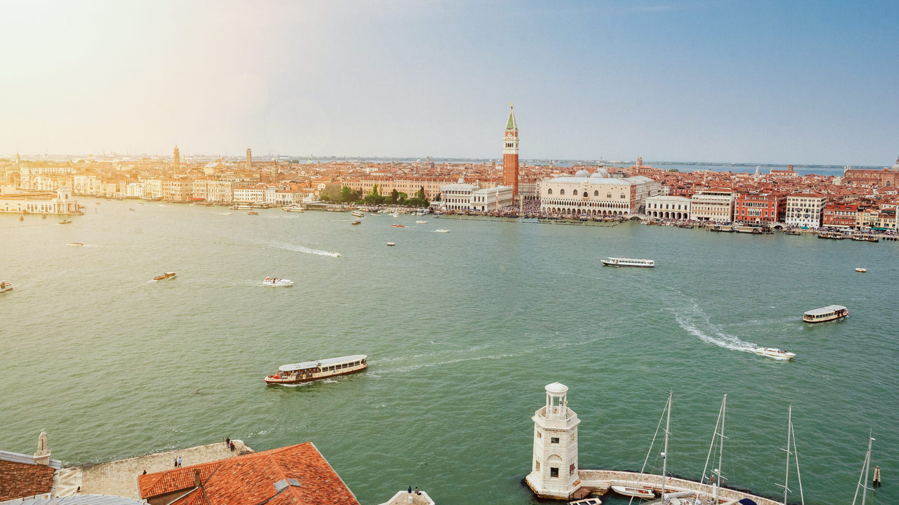
Ogni angolo della città ha qualcosa di unico. Kiwi ha cercato un itinerario per portarvi alla scoperta di alcuni particolari nascosti e intimi della città, da non perdere per scoprire una Venezia segreta e nascosta, lontana dagli occhi dei turisti.
Venezia è la città sull’acqua per eccellenza, sembra di essere in un altro pianeta. L’assenza di macchine e di strade, permette al visitatore di camminare tranquillo e perdersi nel labirinto cittadino. È proprio in questo momento di perdita che si scopre la vera essenza di Venezia, i profumi, la lingua e la vita dei veneziani.
Per un tour classico della città abbiamo dedicato un articolo a parte, in aggiunta potete anche prendere parte ai Free tour di Venezia, vi lascio qui il contatto per la prenotazione. Se invece state cercando un’esperienza completa, allora il Venice City Pass è quello che fa per voi.
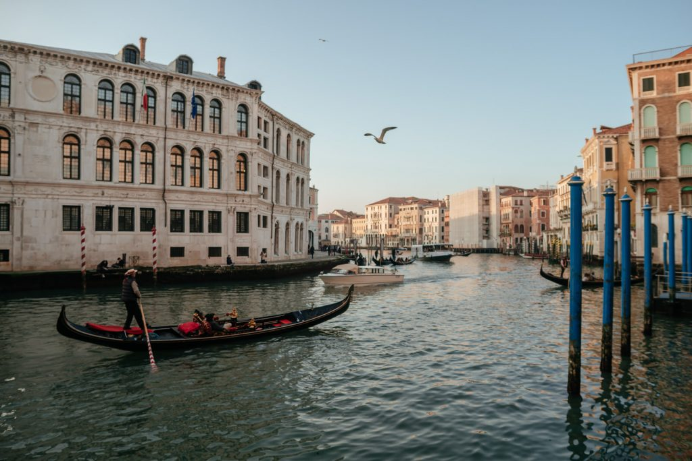
Scoprire Venezia segreta
Quando pensiamo a Venezia la nostra immaginazione vaga tra gondole, canali e Piazza San Marco, l’unica vera piazza della città.
Ma Venezia è molto di più. Venezia è il cappuccino della mattina con il suono dei gabbiani che volano vicino alla finestra; è le passeggiate al tramonto alle zattere o Punta della Dogana; i pomeriggi passati nei giardini dell’Isola della Certosa o a passeggiare in spiaggia al Lido; ombre e cicchetti in compagnia, tra bacari e osterie.
Venezia ha mille sfaccettature: è una città di mare e contemporaneamente è legata alla terra, una piccola città di provincia che sa trasformarsi in una grande metropoli in occasione di grandi eventi come la Biennale Arte, la Biennale Architettura e la Mostra Internazionale del Cinema che si tiene nel mese di settembre.
Spostarsi in vaporetto tra un’isola e l’altra, con il profumo del mare che ti accompagna, è una delle esperienze da fare una volta nella vita. Kiwi ti consiglia di concentrare le tue escursioni alle isole in alcuni giorni, in modo tale da poter usufruire della Tessera Venezia Unica e degli abbonamenti giornalieri, che puoi acquistare qui o in alternativa prenotare qui un’escursione libera in giornata alle isole di Murano, Burano e Torcello.
1. Teatro Italia
Da teatro, a cinema storico fino a diventare un supermercato. Questa è la breve storia del Teatro Italia, il bellissimo edificio costruito nel 1915 dall’architetto Giovanni Sardi e affrescata in parte da Umberto Bellotto e Alessandro Pomi.
Teatro Italia si trova lungo “Strada Nuova”, la via che collega Piazzale Roma al Ponte di Rialto, a circa venti minuti a piedi dalla Stazione di venezia Santa Lucia, è aperto tutti i giorni e la vista è gratuita, in quanto è pur sempre un supermercato.
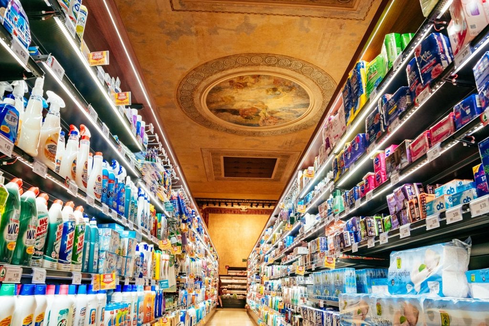
2. Traghetto di Santa Sofia
Dopo aver fatto colazione con un cappuccino e una soffice brioches alla Pasticceria Nobile, di fronte a Teatro Italia, è arrivato il momento di proseguire. Direzione Rialto, ma facendo un giretto in gondola low cost. Il Traghetto di Santa Sofia vi porterà dalla Strada Nuova alla bellissima Pescheria di Venezia attraversando in Canal Grande in gondola.
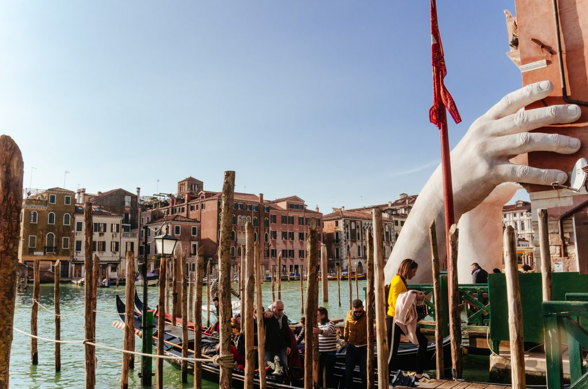
Il costo del biglietto varia nel tempo, ma indicativamente ha una cifra di €3,00 per chi non possiede la tessera Venezia Unica.
Sito Venezia Unica: www.veneziaunica.it
3. Pescheria
La tradizione culinaria della città sull’acqua si basa sul pesce, rigorosamente acquistato fresco in pescheria. La zona è ricca di negozi di alimentari e di bancarelle di frutta, verdura e pesce. Proprio quest’ultimo è rigorosamente schedato con provenienza e metodo di pesca utilizzato.
La pescheria è un’esperienza da non perdere, è una tradizione che va avanti da secoli e, oltre al mercato, quando fa caldo e il sole batte forte diventa anche il posto ideale per assaporare un buon bicchiere di vino, “ombra” in veneziano, oppure un po’ di frutta fresca.
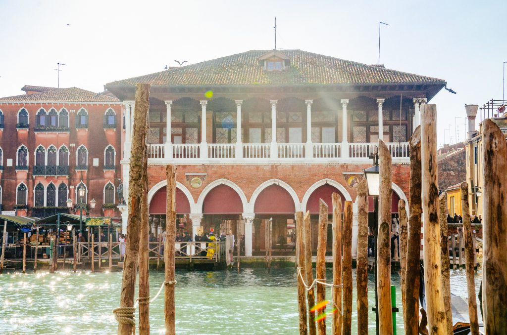
Kiwi vi svela una curiosità della Pescheria di Rialto. Se avete visto “The Tourist“, film con Johnny Depp e Angelina Jolie, una delle scene è stata girata proprio qui.
La Pescheria si può raggiungere anche con il traghetto Santa Sofia che parte dalla Strada Nuova e attraversa il Canal Grande.
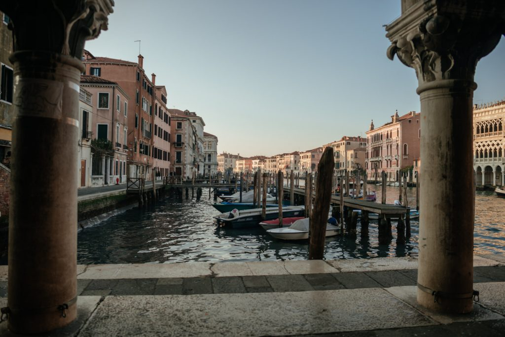
4. Calle Varisco
Dopo aver ammirato il Ponte di Rialto e il suo panorama dall’alto è ora di avventurarsi nella zona di Venezia segreta meno frequentata dai turisti. Questo è il sestiere giusto per perdersi tra le calli e andare alla ricerca delle particolarità della città.
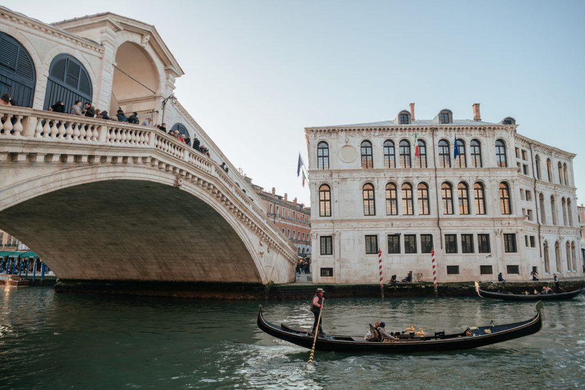
Passeggiate verso la Chiesa di Santa Maria dei Miracoli direzione Fondamente Nove, a metà strada troverete Calle Varisco percorretela fino in fondo per raggiungere il punto largo solo 50 centimetri! Calle Varisco è tra le calli più strette di Venezia.
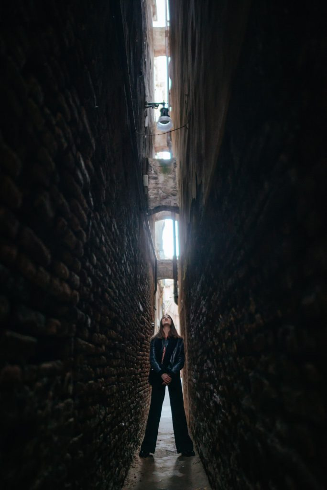
5. Campo Santi Giovanni e Paolo
Il campo, così si chiamano le piazze a Venezia, è caratterizzato dalla presenza di imponenti edifici storici, come la facciata in marmo bianco dell’attuale ospedale della città di Venezia, la Basilica dei Santi Giovanni e Paolo e la Scuola Grande di San Marco.
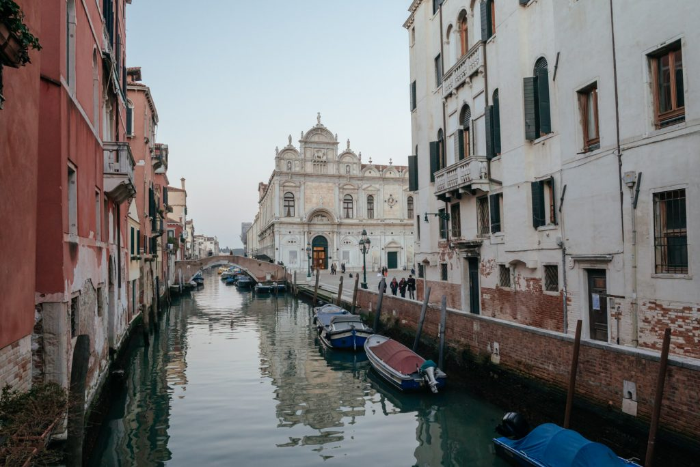
La Basilica domenicana è considerata il pantheon della città per l’elevato numero di dogi e personaggi illustri che vi furono sepolti a partire dal 1400. La Chiesa vanne arricchita con opere d’arte fino a quando Napoleone la trasformò in ospedale, privandola di molte opere. Nel 1867, un incendio devastò la cappella bruciando moltissime opere.
6. Rio Tetta – Casa con 3 lati sull’acqua
Da campo Santi Giovanni e Paolo si cammina fino a raggiungere Rio Santa Marina. All’altezza della biforcazione di Rio Santa Marina, in Rio Tetta e Rio di San Giovanni Laterano, ci si trova improvvisamente davanti ad un quadro. Un ponte in ferro battuto nasconde la vista dell’unica casa di Venezia disposta con 3 lati sull’acqua, i cui proprietari vi accedono solo tramite un cancelletto.
Questa casa è una delle più famose della città, ma è lontana dai classici itinerari.
7. Libreria Acqua Alta
Il sogno di ogni amante della lettura è ritrovarsi avvolto dai libri, in un mondo di parole e fantasie colorate. In una laterale di Campo Santa Maria Formosa, la Libreria Acqua Alta è il posto ideale per vagare con la mente e ricercare le storie più nascoste ed antiche della città di Venezia.
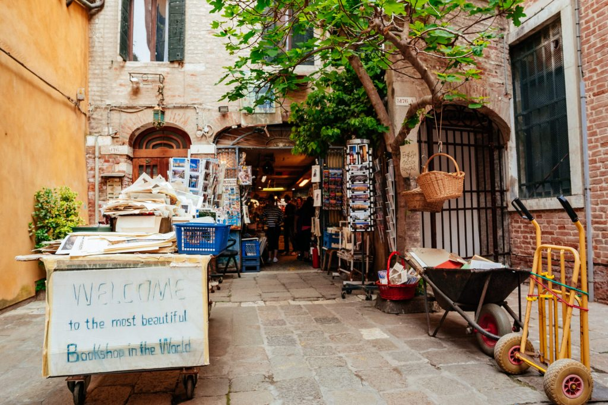
Mappe d’epoca, accompagnate da manuali altrettanto antichi, vi faranno rivivere Venezia con un occhio nuovo e quasi romantico. In ogni campo e ogni calle, la città racconta le sue storie più affascinanti, coinvolgenti e struggenti di epoche in cui era maestosa o in cui subì un forte declino. Le avventure di Casanova, il personaggio veneziano del 1700, più volte romanzato e raccontato e i medici della Peste, epidemia che colpì Venezia nel 1600 provocando la morte di un terzo della popolazione. Le opere del Canaletto, la vita dei gondolieri, la Serenissima e la magia delle serate a teatro rinascono nelle pagine di migliaia di libri depositati in questo piccolo angolo di memorie.
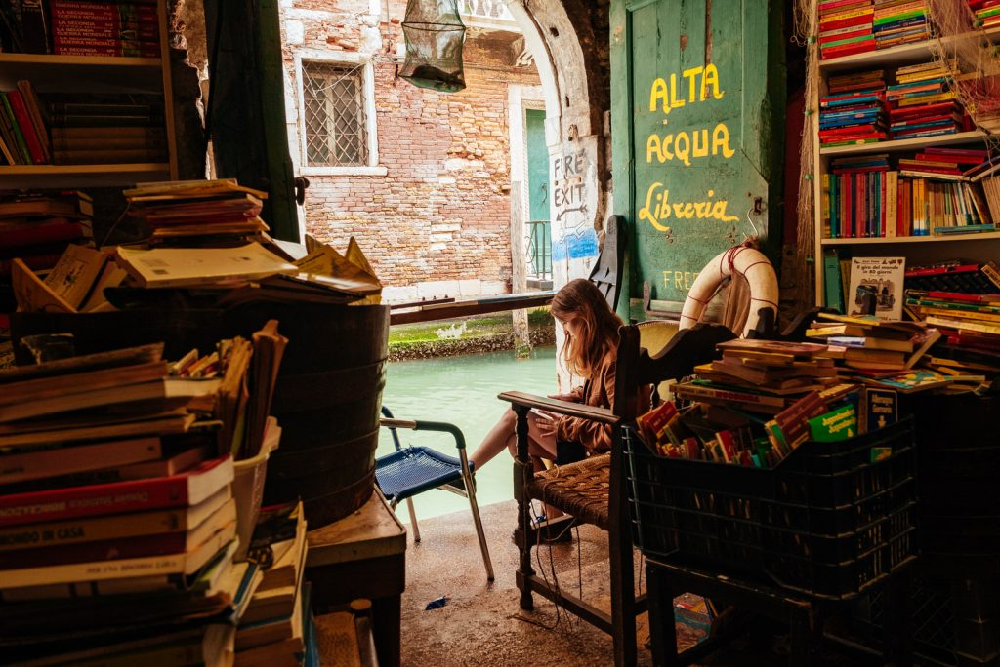
La Libreria Acqua Alta l’abbiamo scoperta assieme qualche anno fa, è un luogo un po’ nascosto e fuori dai principali giri turistici, ma negli ultimi tempi può essere un po’ affollato vista la crescita della sua fama anche a livello internazionale.
Come arrivare:
Calle Longa S. Maria Fromosa, 5176/b
Orario:
Tutti i giorni dalle 9.00 alle 20.00
8. Ponte del Lovo
Venezia lascia sempre con il fiato sospeso, dopo aver vagabondato per il sestiere di Cannaregio, riprendete il passo e correte a mangiare una mozzarella in carrozza alla Rosticceria Gislon. Rigorosamente all’acciuga e con la mozzarella filante, come vuole la tradizione. Oppure un ottimo piatto al volo dalla vicina Osteria Sepa o Al Portego.
Da qui proseguite verso Piazza San Marco, il primo ponte che incontrate è Ponte del Lovo. Si dice che questo sia l’unico scorcio tra i canali di Venezia da cui si vede in tutta la sua bellezza il Campanile di San Marco. Se non è l’unico, probabilmente è il più affascinante.
9. Isola di San Giorgio Maggiore
Arrivati a San Marco non perdetevi la magica atmosfera dell’unica piazza veneziana, dopo aver passeggiato tra il Caffè Florian e meravigliosi mosaici dorati della Basilica, recatevi all’isola di San Giorgio.
L’isola ospita una piccola darsena per piccole barche a motore e a vela, molti spazi espositivi per mostre temporanee, una meravigliosa Basilica costruita dagli architetti Palladio e Longhena e con affreschi di Tintoretto, un monastero e un bellissimo labirinto Borges della Fondazione Giorgio Cini. Nell’estate 2021, in occasione dei 35 anni dalla scomparsa del suo ideatore, il labirinto apre al pubblico tutti i giorni escluso mercoledì. Una visita emozionale, accompagnata da una suite di Giorgio Fresa che guida il visitatore durante il percorso.
Prenotazioni e informazioni:
Tutti i giorni tranne mercoledì ad orari prestabiliti.
Prenotazione online obbligatoria: visitcini.com
Ma l’isola di San Giorgio è anche il posto perfetto per ammirare il labirinto e la città a forma di pesce dall’alto. Venezia ha la sagoma di un pesce e come un pesce senza acqua non può vivere, è un dettaglio nascosto ma facile da immaginare con una prospettiva panoramica.
“Venezia è un pesce” è anche il titolo di un bellissimo libro di Tiziano Scarpa dedicato a questa fantastica città sull’acqua.
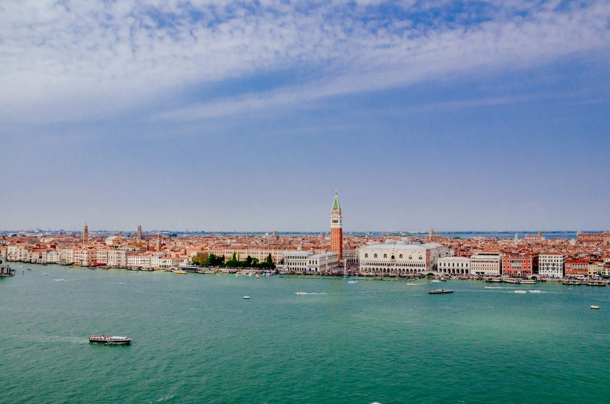
San Giorgio si raggiunge facilmente con il vaporetto numero 2, che parte dall’imbarcadero (terminal) di San Zaccaria, di fronte all'”Hotel Danieli“.
Il costo del viaggio S.Zaccaria – San Giorgio varia da €1,50 per i possessori della tessera Venezia Unica a €5,00: i prezzi sono per persona e a tratta.
Per viaggiare in vaporetto e raggiungere tutte le isole della laguna di Venezia potete acquistare qua la tessera.
10. Tramonto alle Zattere e Punta della Dogana
Da San Giorgio Maggiore rientrate a San Marco e passeggiate fino alle Zattere per ammirare il tramonto.
Durante il tragitto non fatevi sfuggire le mostre d’arte degli spazi espositivi della Fondazione Louis Vuitton, della Galleria d’Arte Contini e di Punta della Dogana. Una visita alla Basilica di Santa Maria della Salute invece è un dovere.
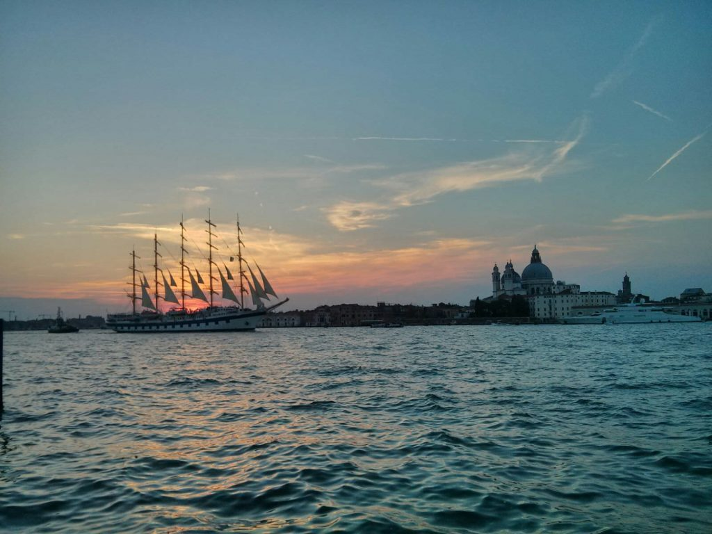
Arrivati alle zattere coccolatevi con il “gianduiotto” della Gelateria Nico e ammirate i colori del tramonto in laguna di fronte al famoso Hilton Molino Stucky.
11. Scala del Bovolo e Palazzo Contarini
Addentrandosi nelle calli attorno a Campo Manin, si raggiunge questa piccola meraviglia di Venezia, Palazzo Contarini. La facciata gotica che si rivolge verso l’esterno è molto elegante ma semplice, la vera magia si trova nella corte interna, detta Corte del Maltese. I loggiati dei cinque piani sono decorati da archi a tutto sesto in pietra d’Istria, contrastanti con la muratura in mattoni.
In realtà, la caratteristica che rende veramente magica questa architettura è la torre esterna, un’architettura raffinata che gioca sul contrasto tra vuoti e pieni.
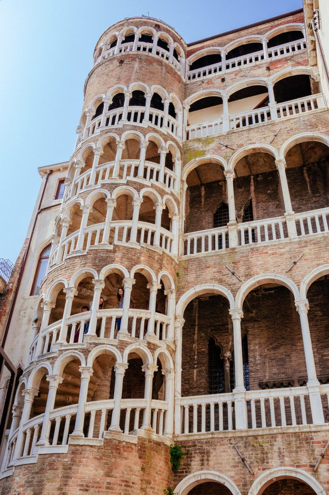
La scala elicoidale è alta 27 metri, ed è detta del “Bovolo”, termine veneziano che indica le chiocciole. Gli archi e le colonne che decorano la torre vi accompagnano fino alla sua cima, la cupola. Ed è proprio qui che vi stupirete vedendo Venezia da una visuale unica. La cupola della Scala del Bovolo è uno dei punti più belli per ammirare dall’alto il campanile di San Marco e i tetti delle case.
Puoi ammirare gratuitamente la scala dall’esterno o meglio ancora accedere al Palazzo Contarini e salire sulla scala acquistando il biglietto di ingresso qui. In cima potrai ammirare un’incredibili vista panoramica sul campanile di San Marco e sui tetti di Venezia.
12. Squero San Trovaso
Il termine veneziano “Squero” indica un cantiere, ma questo è speciale. È il posto dove nasce la forma, il corpo e l’anima della gondola, caratteristica imbarcazione veneziana color nero pece. Infatti, le gondole che navigano leggere raccontano la storia della laguna, sono costruite interamente a mano e sono una diversa dall’altra. Ogni gondoliere richiede dettagli decorativi personalizzati per rendere la propria imbarcazione unica.
Lo Squero San Trovaso è uno degli squeri più antichi della città e risale al 1600, epoca in cui i maestri d’ascia veneziani iniziarono a riparare e produrre le gondole. Il cantiere è caratteristico anche per la sua particolare architettura che richiama le case di montagna, una scelta che riflette la provenienza degli operai e del legno utilizzato per la lavorazione, entrambi originari del Cadore.
Per accedere ai locali della lavorazione delle gondole ed assistere a tutti i processi di produzione si deve prendere appuntamento.
In alternativa potete ammirare gli squeraroli al lavoro anche dalla riva opposta, magari sorseggiando uno spritz o un’ombra con un chicchetto al baccalà alla famosa Osteria Al Squero.
Prenotare la visita: www.squerosantrovaso.com
13. Isola di San Servolo e il Centro di Educazione all’Oceano
L’Isola di San Servolo è una piccola perla della città di Venezia raggiungibile da San Zaccaria con pochi minuti di vaporetto.
L’isola è un’antica sede monastica, trasformata poi in ospedale per i malati mentali fino al 1978 quando la riforma della psichiatria ha portato alla sua chiusura. Oggi il complesso architettonico e la vasta area verde sono stati riqualificati diventando un polo di valore architettonico, storico, artistico e culturale.
Sbarcando nell’isola si possono visitare il museo dell’ex manicomio, l’antica farmacia e la chiesa. Inoltre, dal 2025, l’Isola ospita il SEA BEYOND Ocean Literacy Centre, un centro educativo dedicato al mare realizzato dal Gruppo Prada e UNESCO in collaborazione con lo studio Carlo Ratti le cui visite si possono prenotare nell’apposito sito.
Per scoprire di più su San Servolo: servizimetropolitani.ve.it
La città ha tantissimi posti meravigliosi, questi erano quelli leggermente più nascosti ma che valgono il viaggio assieme ai grandi monumenti più classici della città di Venezia!
Se vuoi dedicare una parte del tuo viaggio alla visita di mostre, musei e palazzi della città (cosa che ti consiglio di fare per conoscere la storia e le tradizioni di Venezia), Kiwi ti consiglia di utilizzare la Tessera Venezia Unica City Pass.
Per scoprire gli eventi e le ultime novità, il sito di Venezia da Vivere saprà soddisfare tutte le tue esigenze e ti farà entrare in contatto con le realtà locali, artigianali e non.
Facci sapere la tua opinione con un commento o contattaci nei nostri canali social o via mail. Per noi il tuo feedback è fondamentale.
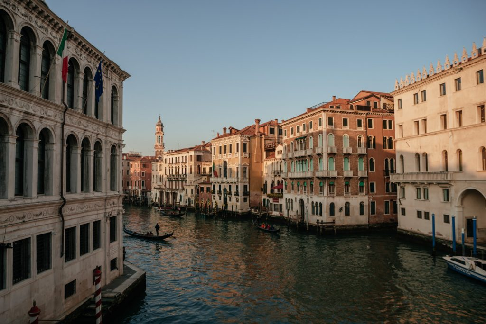
Articolo pubblicato nel 2017, aggiornato a dicembre 2021, marzo 2023 e febbraio 2026.


![“A Lanzarote”. Un’isola, uno stile di vita, uno spazio in cui umanità e natura hanno imparato a convivere, fino ad oggi. “A Lanzarote” è una lode all’equilibrio che punta a far riflettere sul ruolo della natura per la nostra esistenza e di come, in un futuro sempre più imprevedibile, ci sia la necessità di ritrovare una relazione con le meraviglie naturali che ci circondano. “A Lanzarote” vuole essere un’inizio di un percorso che vede la combinazione di natura, design e artigianato locale per promuovere una mentalità di viaggio e vita sostenibili. Questo è Kiwi sotto un’altra veste, la nostra.🌊 Short Film ambientato a Lanzarote (Canarie, Spagna) è stato realizzato da @federico.girotto e @valentinalovat durante il periodo di quarantena, aprile 2020, utilizzando materiali registrati in passato.
Short film completo su IGTV🎞
#Lanzarote](../wp-content/plugins/instagram-feed/img/placeholder.png)
bravi
Molto ben fatto! Grazie
Grazie Irene!:)
Molto bello da fare! Aspetto i prossimi itinerari veneziani e non. Grazie
Cara Eleonora, grazie mille! Presto arriverà qualche novità su Venezia.
Bellissimo articolo! Vi ringrazio perchè ho ritrovato alcuni luoghi che avevo scoperto per puro caso molti anni fa visitando la città ma di cui non mi ricordavo i nomi! Domani sono di nuovo a Venezia per un weekend full immersion con un gruppo di amiche storiche e ho tappezzato la mappa di Venezia di luoghi da visitare! grazie ancora e alla prossima!!
Bellissimo articolo pieno di spunti e indicazioni. Bravissimi. Continuate così.
Grazie Katia!
bellissimo articolo , bravi
Grazie!
Molto ben descritta nei particolari, conoscere e viaggiare senza informarsi spesso si perdono occasioni e tempo, bravi bravi, buona vita sempre serena e felice, a tutti, un detto” se vi piace viaggiare non diventerete ricchi”
Quintessence des beautés de Venise, vos seules photos émerveillent déjà, à Paris ! et vos commentaires font rêver “un très ancien” ! C’est déjà pour lui un bien beau voyage ! 🤗🤗🤗 ! Bravo Valentina !
Bell’articolo, le indicazione sono corrette e sono delle vere chicche di Venezia. Ben fatto. Grazie
Grazie! Tutto molto utile. Continuate e vi ringrazio sempre. Pauli
Bellissimo articolo!
Vorrei continuare ad essere essere informata
Venezia è sempre meravigliosa! Aggiungerei una visita alla terrazza del Fondaco dei Tedeschi: una delle più belle vedute “dall’alto” della città!
Pics are beautiful but I need an English translation. Please!
Grazie! Abbiamo visitato Venezia seguendo il tuo articolo…. Perfetto! È stato molto bello e graziealla mappa siamo riusciti a fare tutto senza perderci!
Ottimo post consigliatissimo
Bellissimo articolo che userò a breve per visitare venezia. Grazie. E poi mi hai fatto rivedere un paio di posti visitati anni fa in cui ero proprio capitato per caso e non li ricordavo, come la calle stretta 50cm..bel viaggio
Che bella guida!!
La seguirò passo passo a gennaio prossimo.
Utilissimo per chi vuole scoprire angoli poco turistici!
Grazie!
Molto interessante e utile , grazie !
Veramente un bell’articolo, utile ai visitatori che si vogliono addentrare nei lati più nascosti della città.
Andrò la prossima settimana e sto abbozzando un piccolo tour di Venezia di due giorni. Non accontentandomi dei soliti trovo i vostri suggerimenti davvero interessanti. Quindi grazie mille.
Davvero molto interessante e dettagliato.
Abbiamo seguito col mio compagno gran parte di queste dritte ed è stato molto divertente, grazie!! Complimenti per l’accuratezza del blog